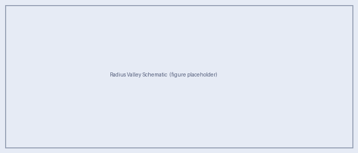

Science Motivation
Can Sub-Neptunes Masquerade as Terrestrial Worlds in Reflected-Light Spectroscopy?
The Habitable Worlds Observatory (HWO) aims to directly image and spectrally characterize Earth-sized planets. A critical challenge for the mission is planet typing: distinguishing truly terrestrial targets from larger, volatile-rich planets that could appear “Earth-like” in low-resolution reflected-light spectra.
The Radius Valley
Transit surveys reveal a statistically significant deficit in planet occurrence near 1.5–2.0 R⊕ — the radius valley or Fulton gap — separating smaller, predominantly rocky planets from larger sub-Neptunes whose radii are inflated by gaseous envelopes (Fulton et al. 2017; Rogers 2015; Lopez & Fortney 2014).

Schematic of the Fulton gap / radius valley. Sub-Neptunes (> 1.6 R⊕) harbour gaseous envelopes that inflate their radii. In reflected-light direct imaging, planet radius is not directly measured, creating a pathway for “un-Earths” to occupy the same observable space as terrestrial planets.
Mass–radius constraints further indicate that most planets larger than ~1.6 R⊕ are not purely rocky (Rogers 2015), while thermal-evolution models show that even percent-level H/He envelopes can substantially inflate radii, yielding composition ambiguity near the valley (Lopez & Fortney 2014).
The Confusion Problem
Future direct-imaging missions like HWO observe planets in reflected light and measure planet–star flux ratios and spectra rather than transit radii. With limited spectral coverage and finite SNR, several effects conspire to make a sub-Neptune look terrestrial:
Cloud decks mute absorption features and flatten spectral slopes.
High metallicity increases mean molecular weight, reducing scale heights and suppressing the contrast of molecular bands.
Phase and separation degeneracies alter the observed flux ratio in ways that are hard to decouple from atmospheric composition at low S/N.
This motivates a forward-model grid study that explicitly maps where in parameter space sub-Neptunes become spectrally confusable with terrestrial analogs — and identifies which wavelength coverage is most diagnostic.
Aurora’s Scientific Objectives
Central objective: Determine whether sub-Neptunes near the radius valley can be reliably distinguished from terrestrial planets using reflected-light spectroscopy under HWO-relevant conditions.
Specific aims:
Build a forward-model grid of sub-Neptune reflected-light spectra varying:
Host star type (FGK)
HZ-relevant separations / insolation regimes
Heavy-element enrichment (metallicity ≈ 1–103× solar)
Cloud-top pressure, sedimentation efficiency, and mixing strength
Assemble comparison spectra for:
Disk-integrated modern Earth benchmarks validated against EPOXI spacecraft observations (Robinson et al. 2011)
Abiotic terrestrial secondary-atmosphere analogs with self-consistent patchy clouds (Windsor et al. 2023)
Identify wavelength regions / feature combinations that best separate envelope-bearing planets from terrestrial analogs despite cloud and composition degeneracies.
Translate results into wavelength-coverage guidance for planet-typing in future direct-imaging surveys.
Confusion Diagnostics
Aurora quantifies “confusion” using a combination of physically interpretable diagnostics and statistical similarity under assumed measurement noise floors:
Band-depth contrasts for major absorbers (H2O, CH4, CO2)
Spectral slopes (Rayleigh regime vs. cloud-flattened continua)
Continuum shape / CIA signatures consistent with H2-rich envelopes
Similarity metrics that define observational degeneracy as spectra statistically indistinguishable at realistic uncertainties
The output will be a mapped confusion region in (enrichment, cloud-top pressure, separation, host-star type) parameter space, along with a set of recommended wavelength windows that best reduce ambiguity.
Interdisciplinary Relevance
Exoplanet demographics & evolution: the radius valley identifies a population boundary shaped by formation and atmospheric loss.
Atmospheric physics & radiative transfer: reflected-light spectra encode scattering, molecular absorption, and clouds; PICASO is designed for this regime (Batalha et al. 2019).
Astrobiology & life-detection strategy: correct planet typing reduces habitability false positives and improves confidence in interpreting spectra as evidence for (or against) habitable conditions.
Expected Deliverables
A documented library / grid of sub-Neptune reflected-light spectra across FGK hosts, HZ-relevant separations, enrichment, and cloud parameters.
Quantitative identification of the most diagnostic spectral regions that discriminate sub-Neptunes from terrestrial/abiotic analogs.
Wavelength-coverage guidance for planet-typing in future direct-imaging surveys such as HWO.
References
Batalha, N.E. et al. 2019, ApJ, 878, 70. doi:10.3847/1538-4357/ab1b51
Fulton, B.J. et al. 2017, AJ, 154, 109. doi:10.3847/1538-3881/aa80eb
Lopez, E.D. & Fortney, J.J. 2014, ApJ, 792, 1. doi:10.1088/0004-637X/792/1/1
Robinson, T.D. et al. 2011, Astrobiology, 11, 393. doi:10.1089/ast.2011.0642
Rogers, L.A. 2015, ApJ, 801, 41. doi:10.1088/0004-637X/801/1/41
Windsor, J.D. et al. 2023, PSJ, 4, 94. doi:10.3847/PSJ/acbf2d